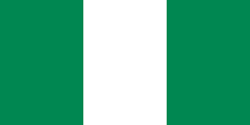

Ediomo V. Ebong
About Me
My name is Ediomo and I go by Eddie. I was born in Nigeria and live with my family in Akwa Ibom State. I am currently building a web development skillset at BYU. I love spending time online researching, traveling, and learning new things.
Akwa Ibom State, Nigeria

Nigeria is a country in West Africa known for its diverse cultures and rich history. It is the most populous country in Africa, home to over 200 ethnic groups and languages, and has a rapidly growing economy driven by oil, agriculture, and tech innovation.